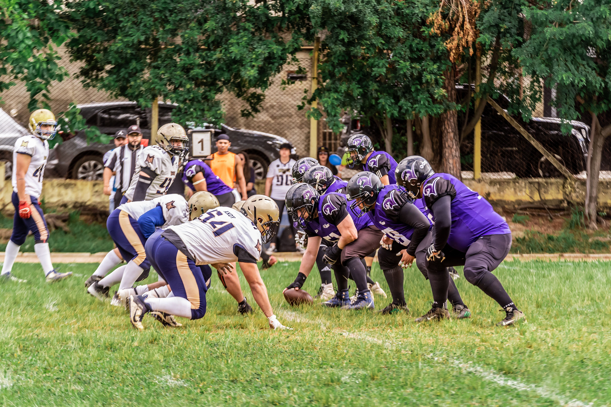

Vikings vinnande i Cousins återkomst

Minnesota Vikings fick en stark inledning på säsongen med sex raka vinster, men efter det kom två raka förluster samt en skada på deras quarterback Kyler Murray, som värvades inför säsongen. Därför kände laget att något behövde förändras innan trade deadline. Svaret blev att Kirk Cousins, som tidigare spelat i Minnesota mellan 2018 och 2023, fick komma hem igen. Cousins lämnade Vikings 2023 för en kortare sejour i Atlanta Falcons och senare Las Vegas Raiders. Under tiden i Atlanta drog han tyvärr på sig en hälseneskada som gjorde att han missade stora delar av säsongen. Men nu är han tillbaka där han spelade sin bästa fotboll, och på andra sidan stod divisionsrivalen Green Bay Packers. Det blev en vinnande återkomst till Minnesota. Cousins Även om han inte stod för sin bästa individuella match kastade han för 207 yards, med 21 av 31 completed passes, samt en interception. Det var kanske ingen imponerande individuell insats, men han gjorde tillräckligt för att hjälpa laget till seger. Vikings vann matchen med 30–10 och visade samtidigt att försvaret kan vara en stor styrka. De lyckades hålla ett divisionslag som Packers till endast tio poäng, särskilt efter de två raka förlusterna. Minnesota har nu ett facit på 7–2 och har fått en välbehövlig seger inför fortsättningen av säsongen. Härnäst väntar dock ett betydligt tuffare test när 8–1 San Francisco 49ers står för motståndet.